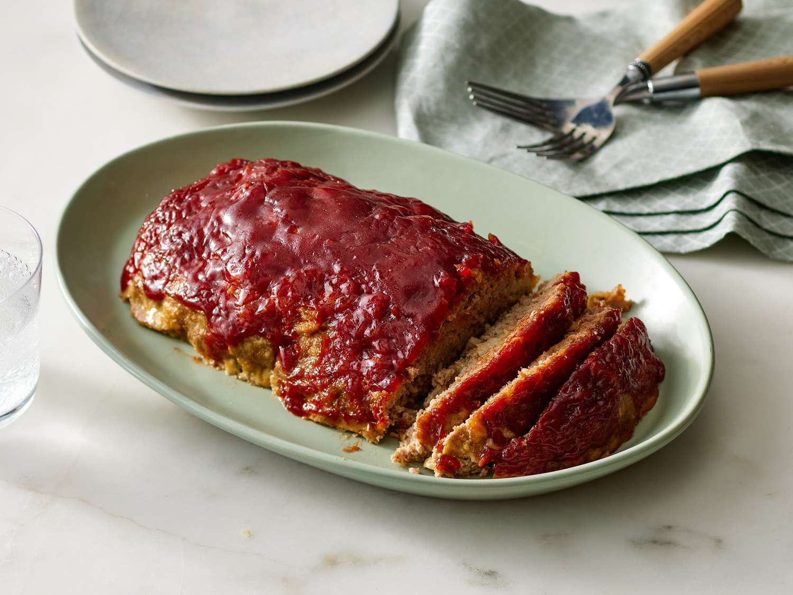

Home
Turkey Meatloaf

Description
This is a delectable meatloaf made of turkey. Turkey meatloaf is
often healthier than its beef counter part. It makes for a great
Dinner.
Ingredients
- 1.5 to 2 pounds ground turkey
- (93/7 or 85/15 blend works best for moisture)
- 3/4 to 1 cup breadcrumbs, crushed crackers, or quick oats
- 1/2 to 2/3 cup milk or chicken stock1
- large egg (lightly beaten)1 small yellow or white onion (finely chopped or minced)
- 2 cloves garlic (minced) or 1 teaspoon garlic powder
- 1 to 2 tablespoons Worcestershire sauce
- 1 teaspoon salt1/4 teaspoon black pepper
Steps
- Preheat your oven to 375°F (190°C).
- Grease a 9x5-inch loaf pan or line a rimmed baking sheet with parchment paper.
- Sauté the finely chopped onion and minced garlic in a small skillet with a splash of olive oil over medium heat for 3 to 4 minutes until soft and translucent. Let them cool slightly.